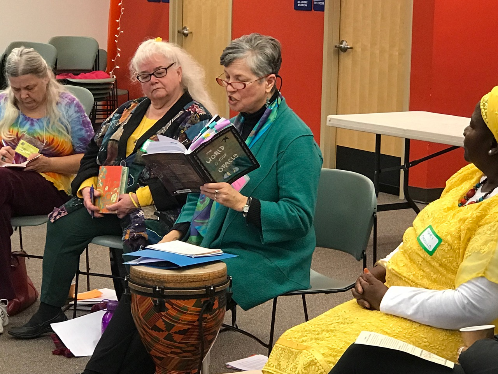
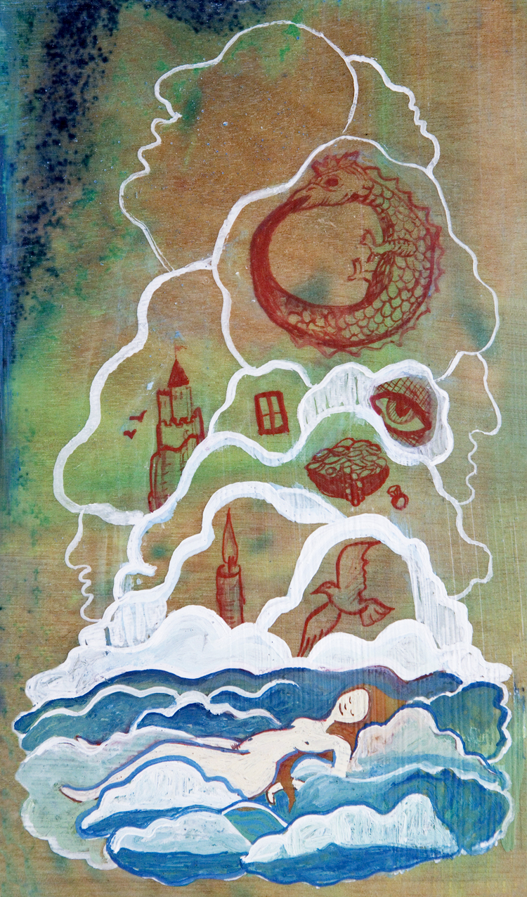

Workshops, Retreats and Keynotes
- Plus Ceremonies and Worship Services -

Since 1993, I've traveled all over North America, facilitating workshops and retreats, delivering keynotes,
creating worship services and singing. In the first year alone I flew to Southern California, Oklahoma, North
Carolina, Saskatchewan, Canada, Michigan, Missouri and many cities in the Upper Midwest. Since then I've
flown all over the US, from north to south and from east to west.
I'll walk more than a mile and fly many hundreds to create learning experiences that allow people to take the next step in their personal growth. I've performed weddings and memorial services, worked with children, led many worship services and rituals.
I work a great deal within my religous home of Unitarian Universalism, but I've also presented workshops for people in earth-centered traditions, for Religious Scientists, for Unity Church and for interfaith groups. My ecofeminism speaks to many people. What I have to say resonates with the many seekers of today.
You were the piece de resistance at the conference! It was exhilarating!
Workshop and Keynote Topics
The World is Your Oracle
Divination allows you to discover your inner wisdom and connect with its counsel.

Mythic Modes
Utilizing intellectual, physical, creative and ritual modes, make the sacred stories that undergird your life visible while connecting consciously with your deepest concerns and your truest self.
Dream Wisdom
Beginning with a dream incubation, we interpret dreams with role-playing, dialoging, ritual, Gestalt, etc.
Invoking the Fire Dragon
Invoke the fire dragon and usher eros into your life, infusing yourself with the playful energy that is the source for ecstatic movement, sensuality and pleasure.Other workshops include: Dream Wisdom, Mythic Modes, Reclaiming Our Stories, Honoring Each Other (an anti-racism workshop), a Council of All Beings, Goddess Mythology in Story and Song, Balancing Dark and Light, Crone and Sage, Finding Your Muse, It’s Elemental, Ssnake GoddessssessS, Celebrating our Mothers’Mothers, The Fabric of our Lives, other Dragon Workshops, plus seasonal rituals.
Worship Services on any of the above topics and many more